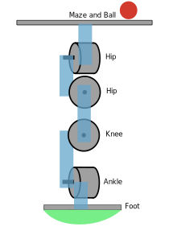

Experiments in Leg Dynamics - Assignment 2
Deadline: 19th December 2022 - 23:59
Updates
Introduction
The goal of this assignment is to demonstrate your ability to implement and control dynamic motions for your humanoid robot.
You will demonstrate the control using: (a) a marble game, and (b) spring supported triple jump.
Challenge 1: Balance using rounded feet
First, replace the standard feet of your robot leg with a rounded feet. You can construct your new foot using styrofoam, cardboard, or other similar material.
 |
Side view of leg assembly with rounded feet |
Open Loop Control of Front-Back Swing
First implement a program that makes the leg swing forward and backwards smoothly. There are several methods for implementing such behavior, including central pattern generators (CPG).
Closed Loop Control of Front-Back Swing while Balancing the Marble/Ball
Implement an application on the Raspberry PI to control the leg with rounded feet.
In this part of the challenge, we will simplify the maze to a single rail, which runs from the front to the back of your maze.
|
A maze with a single rail for experiments in feedback control. |

Camera Feedback
Mount the camera of the Raspberry PI so that you can the angle of your leg as well as the ball.
Implement a program for the camera. I suggest a simple blob/color detector to estimate the position of the ball and angle of the hip of your leg.
PID Control
Implement and tune a PID controller to try and balance the ball on the track using your new leg assembly with rounded feet.
Challenge 2: Cerebellar Model Articulation Controller (CMAC) based Control
Replace the PID controller in the previous challenge with a CMAC controller. The CMAC controller should control the two joints in the lateral plane using current angle of the leg, current angle of the maze, current velocity of the ball, and current position of the ball.
Challenge 3: Jumping robot
In this challenge, we want to implement a triple jump event for your new leg design. Triple jump is an event in the FIRA HuroCup competition.
We use a simplifed version of the event in this assignment. The winner of the competition is the team that can jump the furthest with a maximum of three jumps.
To reduce the amount of impact forces and to provide you with a method to store a large amount of energy, you should add springs to the bottom of your feet.
Honesty declaration
By submitting an assignment, you claim that your submission is only your own work. This means that you have developed the design, implemented the code, run the experiments, and all other work necessary to complete the assignment by yourself.
If you discussed your work with other students or used sources on the Internet, then you must say so clearly at the beginning of the assignment.
You can discuss parts of the assignment with others, but these discussions must be limited to sharing ideas on a whiteboard or notepad. If you exchange code/programs/designs or exchange any material via the Internet, then you must say so in your honesty declaration.
Fill out the Honesty Declaration and add any external sources that you used during the assignment.
Submissions
This assignment must be done in groups of maximum two students.
If you use information or code that is not your own (e.g., sample code from the Internet, ideas for new features from a classmate, etc.), then you must specify this in your assignment write-up. Failure to disclose that you used external sources will lead to disciplinary actions.
To hand in your assignment:
- Create a directory to hold all of your data. The directory name should be <student id>_a<number>, where <student id> is your student id and <number> is the number of the assignment,
- Create a directory source inside of the directory <student id>_a<number>.
- Put the source code, which may contain of multiple files, for your assignment’s solution into the directory source.
- Your prg\ram must compile by just running the command make in the source directory or a similar step for your programming language of choice.
- Write a README file to explain anything you feel is necessary or important about your submission. This may include special features/bugs of your program. Describe what parts of the assignment you implemented. It is in your interest to simplify the job of the marker.